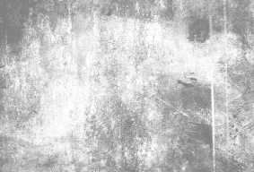
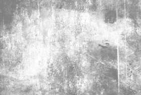
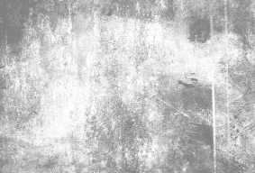

Nettoyage
Bravo tu as désormais toutes les clés en main pour restaurer cette œuvre. Pour cette première étape de la restauration, tu vas devoir “dépoussiérer” l'œuvre.

Tapote pour la nettoyer
CONTINUER
 
